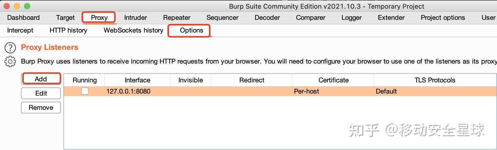

安卓、苹果的全局代理以及抓包¶
代理¶
简单来说代理就是一个中间人：
没有代理的时候，客户端只接请求服务器，有了代理，客户端就请求代理，代理再去请求服务器。服务器返回时先返回给代理，代理，返回给客户端。
有了代理我们就可以看到客户端的请求数据，和服务器的返回数据。常见的代理软件：Fiddler 、Charles、Burp Suite Professional，我最常用的就是 Burp Suite Professional，它是 CTF 最常用的抓包工具，内部集成不少实用工具，Java 开发，轻量级，Windows 和 Mac 通用。
什么是全局代理，什么是局部代理？¶
使用全局代理，则计算机中的所有程序都会走这个代理，即你本机的IP地址会变成这个代理的IP地址。
如上图，可以看出，所有的进程的请求都先通过代理服务器，再通过代理服务器发给目标服务器。
而局部代理，只是部分请求经过代理服务器，而其他请求还是直接发送到目标服务器的。
如上面的两张图，图1的进程A的请求经过了代理服务器，而图2的进程B的请求则是直接发送到目标服务器。
为什么要设置全局代理？¶
原因1——检测代理¶
APP在发起网络请求前会检测系统是否设置了代理，如果发现有代理，就不发起请求。以下是一段APP检测系统是否有代理的实例代码：
特征¶
设置手机代理后，APP无法获取网络数据。
解决方案¶
方案一¶
适合在 PC 电脑上进行。通过修改 host 文件，让客户端认为代理服务器就是目标服务器。比如客户端请求 http://xxxxxx.com，我们的代理服务器是 192.168.3.9:80，那就在 host 里面添加 "192.168.3.9 http://xxxxxx.com" 然后代理服务器收到请求后在转发到 http://xxxxxx.com。
方案二¶
适合移动设备或 PC，简单来说就是使用 VPN 将终端设备的流量转发到代理服务器。VPN 软件上添加一个 HTTP 服务器，就是代理服务器的 IP 和 端口，然后设置全局代理，这样所有的请求都会走 VPN，也就是走代理服务器了。这样就可以抓包。亲测有效。
原因2——# No Proxy¶
除了上述情况外，有些 app 默认就是不走系统代理，或者某些关键的请求不走代理，实际情况还真不少，这种情况下，设置了代理也没用。 以下是一段使用No Proxy参数发起网络请求的代码：
特征¶
设置代理后，APP依然能正常获取网络数据，但抓包工具无法抓到该APP的数据包。
解决方案¶
方案一¶
直接在系统底层使用iptables强制转发流量（ProxyDroid：全局模式）
方案二¶
以VPN形式设置代理（Drony，启动后手机状态栏上会显示VPN图标）
方案三¶
直接hook上面代码所在点，使其强制走代理，具体hook代码可到星球自取。
全局代理怎么设置？¶
我们介绍一下针对移动端设备的全局代理的设置。
Android系统¶
推荐从Google Play下载ProxyDroid，目前最新版本是V3.6.0，对于我们基本的全局代理抓包只需要做如下的基本配置即可。
对ProxyDroid进行配置（基本配置）:¶
- Auto Setting不勾选，我们手动进行配置。
- Host：输入代理服务器IP。
- Port：输入代理服务器端口。（HTTP默认808，SOCKS默认1080，具体视服务器情况而定）
- Proxy Type选择代理服务器提供服务类型：我这里选择Socks5。
- Auto Connect为当2G/3G/WIFI网络开启时，自动开启代理服务。不勾选，我们手动启动，以获取最大灵活性。
- Bypass Addresses：相当于黑名单列表，选择排除代理的IP范围，有需要的可以自己手动设置。
认证信息配置：¶
- Enable Authentication ：如果代理服务器需要账户、密码认证，勾选。
- User ：认证账户名。
- Password ：认证密码。
- NTLM Authentication：NTLM/ NTLM2，Windows早期的一种认证方式，不用勾选。
特征设置：¶
- Global Proxy：一定要勾选，即为全局代理，代理所有App。
- Individual Proxy：单独代理所选App ，勾选了（1）的不用管。
- Bypass Mode：勾选了代表（2）中所选App不代理，勾选了（1）的不用管。
- DNS Proxy：开启DNS代理。
通知设置：¶
- Ringtone ：选择通知铃声。
- Vibrate ：选择连接发生变化时是否震动提醒。
iOS系统¶
我们使用小火箭Shadowrocket，简单好用，不过现在不太容易下载到对应系统版本的包。
添加节点
我们点击右上角的+号添加节点 - 类型一般选择HTTP - 添加服务器和端口即可
打开VPN
选择我们刚才配置的节点，最前面显示小黄点 - 全局路由选择代理 - 开启上面的开关即可
按照以上配置，我们就可以针对一些不走系统代理的客户端进行抓包了。
BurpSuite高级用法透明代理抓包（不用设置代理，不用安装证书）¶
路由重定向¶
原理¶
HTTP/HTPS的默认端口分别是80和443我们在BurpSuite并设置透明代理，模拟并监听这两个端口，在透明代理中应用认为我们用BurpSuite模拟服务器开放端口就是真实服务器，实际上将手机的TCP协议的路由都重定向到我们的电脑IP地址中进而BurpSuite会进行代理服务器转发。
操作¶
- 添加80、443、8080端口，设置透明代理

按照上面步骤依次添加其他几个端口：
- 接下来进入手机shell进行配置（手机需要root）
其他全局代理工具——Drony（不建议）¶
不管是Drony，还是上面介绍的ProxyDroid，其实都是一款VPN工具，即将手机上的所有流量都重定向到drony自身 ，这样drony就可以管理所有手机上的网络流量，甚至可以对手机上不同APP的流量进行单独配置。
安装drony¶
您可以在网络上搜索drony选择自己想要的版本进行安装，或者在到星球下载最新版，安装完成后打开软件如下图
开启代理抓包软件（我使用的是Charles）¶
我用了burp好像有点问题，两款抓包工具实现原理略有差别，有时候这个不行的时候可以试试另外的，说不定就有奇迹。 其他证书相关内容不做赘述，可参考之前的文章。
配置drony转发（左右划动切换功能页面）¶
点击选择Networks Wi-Fi 进入配置
选择我们手机连接的wifi
配置要为当前网络使用的代理入口（这里直接填写burp代理地址就可以），选择代理模式为手动（Manual）
注意Proxy type代理方式要选择 Plain http proxy
Filter default value 选择 Direct all ，然后点击下面的Rule设置应用规则
Network id处 选择当前wifi的SSID - Action 选择 Local proxy chain - Application 选择需要强制代理的APP - Hostname 及 Port 不填 表示所有的都会被强制代理，因为APP可能会使用其他的网络协议不一定都是http，可能不希望把所有流量都引流到http代理服务器，这个时候就会使用这个配置指定ip及端口才转发
完成后保存即可，然后返回到SETTING主页，滑动到LOG页，点击下面按钮，使其处于ON的状态（表示启用）
adb命令行设置代理¶
- 设置代理
- 关闭代理,建议第一种（三条都要执行）
或者
实验（失败）¶
我们可以用iptables命令查看经过上面的ProxyDroid配置之后的网络配置参数具体是什么情况，看看能不能通过iptables的命令完成ProxyDroid的配置，事实证明是可以完成对应的配置，但是结果不太一样，无法抓包的还是无法抓包，不知道问题出在哪里，有大神知道可以指导一下。
- ProxyDroid配置后的参数：
* 通过iptables命令进行配置：
经过以上命令后，配置参数和上图一致，但是还是无法达到ProxyDroid的效果。
拓展分析¶
无奈之下打算分析一下ProxyDroid代码，看看代码中具体怎么实现 - 找到了一些使用iptables的命令痕迹
- 跟踪一下吧
- 包含了一些root检测
- 好多命令啊，还要提权，我废了
[ProxyDroid源码]（https://github.com/madeye/proxydroid），感兴趣的可以看看。看了一下用到了cntlm、redsocks、netfilter/iptables、transproxy、stunnel等开源软件，还是相当复杂的。
参考文章：
1、https://blog.csdn.net/codezjx/article/details/8872071
2、https://blog.csdn.net/somenzz/article/details/124113506
3、https://blog.csdn.net/weixin_44575208/article/details/107345190?spm=1001.2014.3001.5501
4、https://xz.aliyun.com/t/9843
5、https://www.cnblogs.com/lulianqi/p/11380794.html
凡本网注明"来源：XXX "的文/图/视频等稿件，本网转载出于传递更多信息之目的，并不意味着赞同其观点或证实其内容的真实性。如涉及作品内容、版权和其它问题，请与本网联系，我们将在第一时间删除内容！
作者: 移动安全星球
来源： https://zhuanlan.zhihu.com/p/612527336